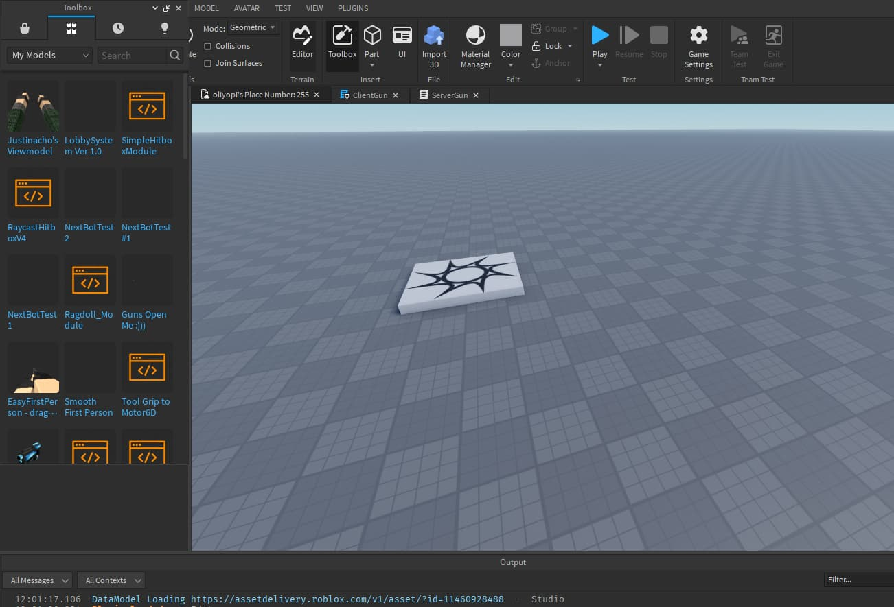

Roblox Studio
Roblox allows players to create their own games using its proprietary engine, Roblox Studio, which can then be played by other users.Games (called "experiences" by the corporation) are made with a derivative of the language Lua named Luau. Users are able to create purchasable content through one-time purchases, known as "game passes", as well as microtransactions which can be purchased more than once, known as "developer products" or "products". The majority of games produced using Roblox Studio are developed by minors, and a total of 20 million games a year are produced using it.
